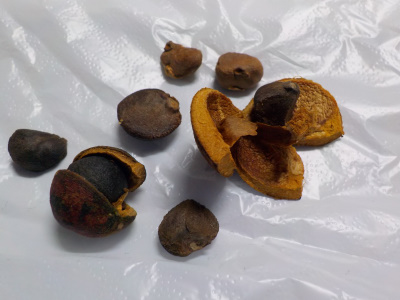
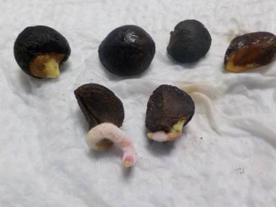
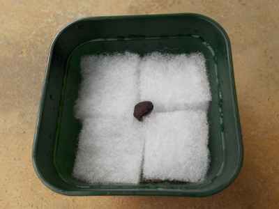
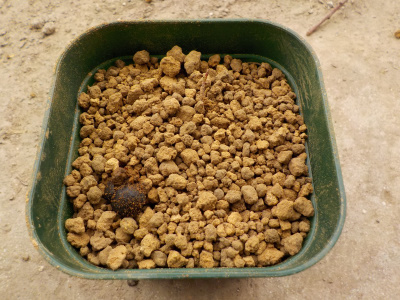
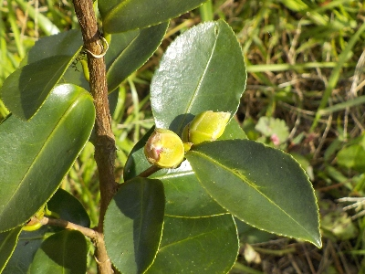
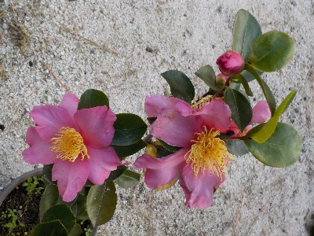
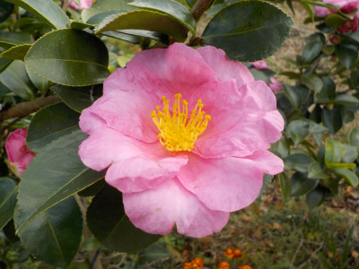

垣根のサザンカの種を採りました。
更新日 : 2019/11/30

花が綺麗に咲いてる時期ですが、まだ種が落ちずに残っていました。
今の時点で残ってる種ってどうなんでしょうね。順調には育っていないですよね。
でも試に蒔いて育ててみます。
更新日 : 2019/11/30

花が綺麗に咲いてる時期ですが、まだ種が落ちずに残っていました。
今の時点で残ってる種ってどうなんでしょうね。順調には育っていないですよね。
でも試に蒔いて育ててみます。
更新日 : 2020/02/29

ほんのりピンク色の根っこが出てくるとは思いませんでした。
なにげにちょっと気持ち悪い。
更新日 : 2020/03/14

まだ根っこしか出ていないですが、根っこが大きいので移動しました。
早く葉っぱが見たいです。
水耕栽培にしたのは、部屋の中に土を入れたくなかったからです。
更新日 : 2020/04/18

以前に水耕栽培しましたが、他の残ったタネは普通に土に植えました。
一鉢に２本入れました。
更新日 : 2024/11/10

5年前に拾ったタネが育って、花が咲きそうです。
実生だし、家のサザンカは酒類がいろいろあるので、新種っぽい変わった花を期待しています。
更新日 : 2025/12/07

開花して2年目なので、花の形が安定していると思います。

こちらは親だと思われるサザンカの花です。
比較すると、雄蕊雌蕊が大きい。花びらがフリフリしてない。色がちょっと濃い感じがします。
花びらが重なってない方が、花が散りやすくていいかなと思いました。
サザンカが咲くと、冬の準備をしなきゃって思います。